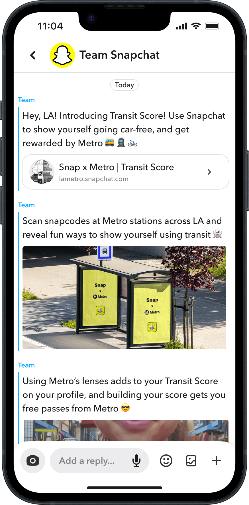
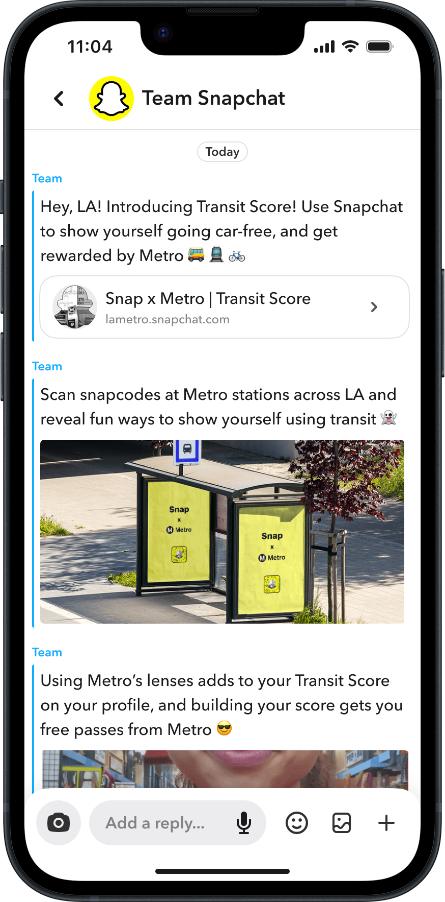

Garnish
Nov 2023 - Ongoing
A new, mess-free recipe finding app.


I design software interfaces and bring them to life with code.
34.0549° N, 118.2426° W (Los Angeles, CA)
Nov 2023 - Ongoing
A new, mess-free recipe finding app.
May 2021 - Ongoing
A trip planning app born from my longing for a more fun way to organize my future trips around the world.

Jun 2023 - Aug 2023
A 2-week product sprint to create a Snapchat feature that would address the inaccessibility of higher education for low-socioeconomic populations, particularly first-generation students.

![Three iPhone mockups. The first screen shows two people in a video call with each other, and the chat is titled 'Pod' to indicate it is meant to be within a Study Pod. The second screen shows the actual text group chat titled 'Pod.' The members are discussing their intentions to begin studying for an upcoming exam, and there is a pomodoro timer started within the chat. The last screen shows a model that shows the user the other users within the chat, and gives them options to start a timer or close the group to new members.](./projects/sda/highlights/highlight-2.png)

Jun 2023 - Aug 2023
Social campaign educating the public on the physical cost of cars, as well as an integrated Snapchat feature.
 

![Mockup of three different informational posters put onto a public brick wall. All three are mostly in black and white. The first shows a photo of Dodger Stadium in LA and says “LA can fit 10 Dodger Stadiums in the parking lot of Dodger Stadium. Make space for humans, not cars.” The second shows people standing in a parking lot with no vehicles to emphasize the difference in size between humans and cars, as well as a scaled top-down map view of Central Park; the text reads 'NYC has 12 Central Parks' worth of on-street parking. Make space for humans, not cars.' The last image features the same words, but with just with plain images of empty parking lots.](./projects/sda/highlights/highlight-sc-1.png)
Aug 2020 - May 2021
As a volunteer designer, I helped redesign a dashboard for grade-school students to stay motivated and accountable during COVID remote learning.
![Mockup of the Dashboard Home Screen. The screen features a sidebar that has links to five pages: Home, Points, Store, Wishlist, and Attendance, with Home currently selected. Under that is a section that includes a list of the users teachers. For example, one of their teachers is Mr. Ventura, who teaches Mathematics. To the right are card elements that represent each class a student is meant to be in on the current day; each card has a hero image, the class title, the class time, the teacher, and a button that says 'Enter Class.'](./projects/books-n-bucks/highlights/highlight-1.png)


I'm a software designer and developer in Los Angeles, California. My focus is on visual and interaction design for web applications and native mobile apps.